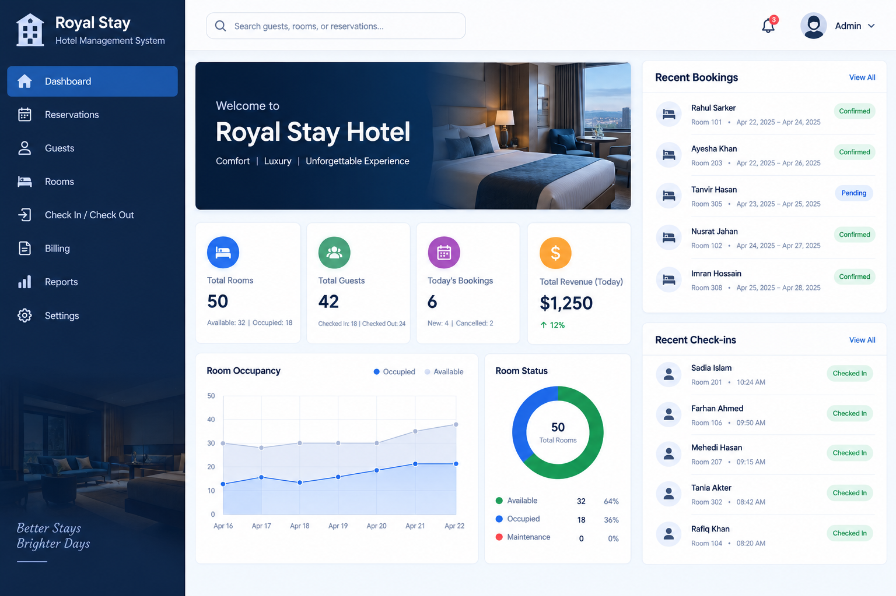

Project Name : Nexus – A Collaborative Knowledge Graph for Integrated Learning
Designed a collaborative learning platform that organizes educational resources using an interconnected knowledge graph instead of traditional folder-based structures. The system represents concepts and learning materials as nodes connected by edges to illustrate relationships and dependencies. It supports real-time collaboration, AI-driven semantic link suggestions, and optimized learning paths, enabling students to connect ideas, visualize knowledge relationships, and develop a deeper understanding of complex topics.
Tech Stack

Project Name : Hotel Management System
Developed a Hotel Management System to simplify hotel operations, including room management, reservation handling, guest information management, check-in/check-out tracking, billing, and revenue monitoring. The system provides a centralized dashboard to monitor room availability, occupancy status, daily bookings, and hotel performance, helping improve operational efficiency and guest service.
Tech Stack

Project Name : Digital Logic Design (DLC) Project – Digital Display Circuit
Designed and implemented a digital logic circuit using a breadboard, digital display units, integrated circuits, and jumper wires. The project demonstrates practical digital electronics concepts, circuit connections, and numeric display output through hardware implementation.
Tech Stack